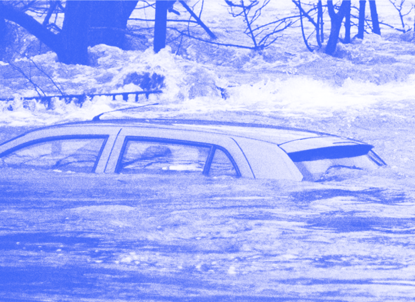

Как собраться в пустыню?

На нашей планете множество интереснейших мест, которые хранят удивительные секреты. Некоторые места более доступные и лёгкие для посещения, как, например, ближайшее подмосковье или побережье средиземноморья. Другие — более экстремальные и требующие особой подготовки: высокогорье, тайга, пустыни, и именно о путешествиях в пустыню мы поговорим в этот раз.
Что такое пустыня?

Пустыня – это буквально высохшая почва, протёртая до состояния песка.

Что с собой брать?
Хорошим референсом для вас станут покрытые с ног до головы бедуины и туареги. Исследуйте пустыню безопасно.
Вам также пригодится:

Земля уходит из-под ног

10 самых badass змей

А у нас в квартире газ!

Слишком много воды